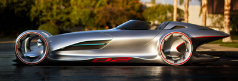
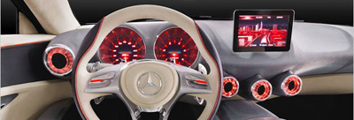
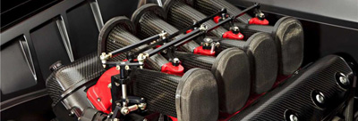
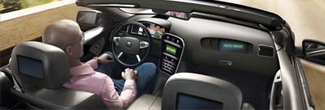
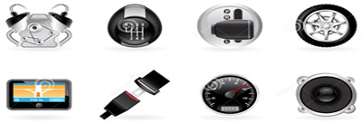

Exterieur - Fascinerend design ligt in zijn genen.
Het design van de Avatar is de belichaming van rijplezier in pure schoonheid. Gebogen vormen, edele materialen en de hoogwaardige
afwerking tot in het kleinste detail maken van de Avatar een roadster die zijn gelijke niet kent. Open of gesloten, dat kiest u zelf.
Het gebruiksvriendelijke variodak helpt u daarbij.
Bij de aanblik van de langgerekte voorzijde met opvallende luchtinlaten wordt direct duidelijk dat dit een lid is van de Prothero
sportwagenfamilie. Het coupéachtige zijaanzicht, waarbij de subtiele lijnvoering overgaat in een gespierd achterspatscherm en een
korte achterzijde, straalt de drang tot prestaties uit.

Interieur - Karakter herkent men aan het design.
Niet alleen aan de buitenkant laat de Avatar zijn sportief karakter opvallend blijken. De dynamische uitstraling van het exterieur
wordt in het interieur voortgezet door sportieve luxe. Een geoptimaliseerd instrumentenbord, hoogwaardige oppervlakken, grote
sierelementen en vele technische innovaties kenmerken de dynamische roadster. De materialen zijn van exclusieve kwaliteit, zorgvuldig
uitgekozen en gecombineerd. Het sportieve design is ergonomisch en intelligent op de bestuurder afgestemd.
De cockpit met onderaan afgevlakt multifunctioneel sportstuurwiel en de sportzetels met geïntegreerde hoofdsteunen verwijzen naar de
autosport. Metalen oppervlakken in zilverchroom van geborsteld aluminium versterken het sportieve karakter van de Avatar.

Technisch - Rendementverhogende technologieën in de Avatar.
Directe injectie, downsizing, een hogere compressie en turbodrukvulling zorgen in de geperfectioneerde generatie van benzinemotoren
voor topwaarden in koppel, vermogen en geluidsbeperking. Met behulp van innovatieve motortechnologie konden de uitstoot van schadelijke
stoffen en het brandstofverbruik aanzienlijk worden verminderd ten opzichte van de voorgaande modellen.
De extra uitrusting uit het huis Prothero brengt exclusieve sportiviteit. Voor alle motoren bieden we een exclusieve uitrusting aan,
die de dynamiek en de lifestyle van de Avatar op indrukwekkende wijze beklemtonen.
Comfort - Alles voor goed entertainment en doelgerichte navigatie.
De Avatar maakt ook wat multimedia betreft heel wat emoties achter het stuurwiel los. Bovendien maken innovatieve comfort- en
navigatieuitrustingen, en comfortabele communicatieoplossingen van de Avatar een partner voor werk- en vrije dagen, met het dak open of g
esloten, in stilstand of in beweging.

Veiligheid - Op weg naar rijden zonder ongevallen.
Het Prothero veiligheidsconcept omvat tal van maatregelen om u veilig te laten rijden: het Cockpit Management & Data System is volledig op
de bestuurder afgestemd. Het wordt aangevuld door systemen die de bestuurder in kritieke rijomstandigheden kunnen bijstaan. Een Prothero is
meer dan alleen maar een auto. Hij is een reisbegeleider, werkplek, levensruimte. De originele accessoires zijn er perfect op afgestemd.
Wat we met PRE-SECURE meer dan tien jaar geleden zijn begonnen en met XTR-SAFE voortzetten, hebben we vandaag verder ontwikkeld tot een
nieuwe dimensie van autorijden: Prothero Smart Drive – comfort en veiligheid met elkaar versmolten. Zichtbaar en voelbaar in de Avatar.

Opties - Nog meer sportiviteit en individualiteit.
Leg visuele accenten of kies voor handige accessoires die uw Prothero nog praktischer maken. Alle producten zijn perfect op uw voertuig
afgestemd en blinken uit door de allerhoogste kwaliteit en de grootst mogelijke veiligheid.
Als u voor uw Avatar nog meer dynamiek en sportieve uitrustingskenmerken wenst om de atletische verhoudingen van de Avatar nog beter tot
hun recht te latenkomen. De uitrustingen van de Performance Studio bieden talrijke mogelijkheden om het dynamische karakter van het krachtige A
vatar model nog te versterken.